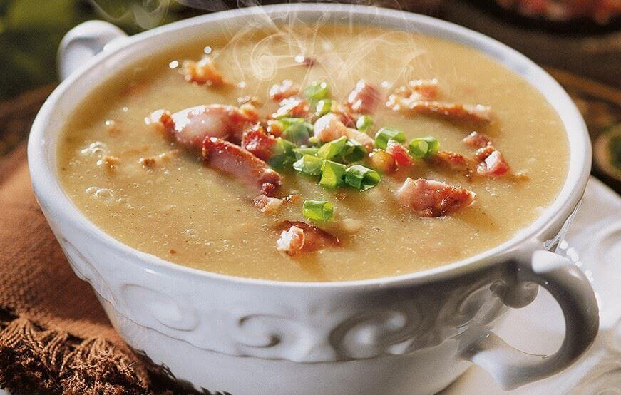
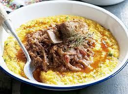
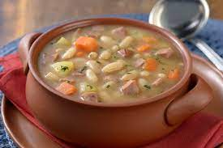
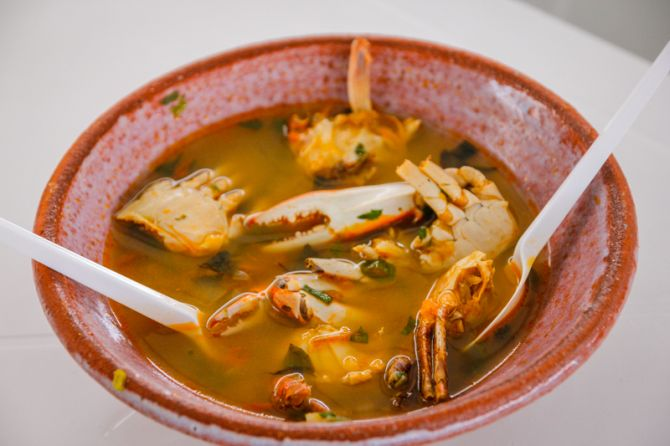

Caldos de Mandioca
CALDINHO DE MANDIOCA SIMPLES E RÁPIDO

500 g de mandioca descascada
100g de bacon picado
1 gomo de calabresa picada
1 cebola picada
Cheiro verde a gosto
Coloque a mandioca na panela de pressão, cubra-a com água, tampe e leve para cozinhar. Deixe por 30 minutos após pegar pressão.
Após isso desligue o fogo e aguarde até que a pressão saia sozinha.
Retire a mandioca da panela e despeje no liquidificador, junto com a água. Bata por cerca de 2 minutos ou até que forme um creme bem homogêneo. Reserve.
Aqueça uma panela e frite o bacon até dourar. Em seguida adicione a cebola e refogue ligeiramente. Adicione a calabresa e frite ate dourar
Acrescente o creme de mandioca e mexa para misturar bem
Abaixe o fogo e mexa de vez em quando até começar a ferver. Para finalizar, salpique cheiro verde e sirva em seguida.
SOPA DE MANDIOQUINHA PRÁTICA E DELICIOSA
 2 mandioquinhas (batata-baroa) cerca de 200 g
½ cebola
1 dente de alho
2 xícaras (chá) de água
1 colher (sopa) de azeite
1 folha de louro
sal e pimenta-do-reino moída na hora a gosto
cubos de bacon dourados a gosto para servir
Lave, descasque e corte as mandioquinhas em rodelas médias. Descasque e pique fino a cebola e o alho.
Leve uma panela pequena de borda alta ao fogo médio. Quando aquecer, regue com o azeite, adicione a cebola, tempere com uma pitada de sal e refogue por 2 minutos até murchar. Junte o alho e o louro e mexa por apenas 1 minuto para perfumar.
Acrescente as rodelas de mandioquinha e misture bem. Regue com a água, tempere com sal e pimenta a gosto e deixe cozinhar em fogo médio. Quando ferver, tampe parcialmente a panela e deixe cozinhar por cerca de 10 minutos ou até a mandioquinha ficar bem macia – verifique o ponto espetando um garfo.
Desligue o fogo e, com uma pinça, retire a folha de louro. Com cuidado, bata a sopa com um mixer, dentro da própria panela até ficar bem lisa. Se preferir, bata a sopa no liquidificador, mas atenção: segure firme a tampa do liquidificador com um pano de prato para evitar que o vapor quente da sopa abra a tampa.
Prove e ajuste o sal e pimenta. Sirva a seguir com folhas de salsinha, salsinha picada, croutons e cubos dourados de bacon a gosto.
2 mandioquinhas (batata-baroa) cerca de 200 g
½ cebola
1 dente de alho
2 xícaras (chá) de água
1 colher (sopa) de azeite
1 folha de louro
sal e pimenta-do-reino moída na hora a gosto
cubos de bacon dourados a gosto para servir
Lave, descasque e corte as mandioquinhas em rodelas médias. Descasque e pique fino a cebola e o alho.
Leve uma panela pequena de borda alta ao fogo médio. Quando aquecer, regue com o azeite, adicione a cebola, tempere com uma pitada de sal e refogue por 2 minutos até murchar. Junte o alho e o louro e mexa por apenas 1 minuto para perfumar.
Acrescente as rodelas de mandioquinha e misture bem. Regue com a água, tempere com sal e pimenta a gosto e deixe cozinhar em fogo médio. Quando ferver, tampe parcialmente a panela e deixe cozinhar por cerca de 10 minutos ou até a mandioquinha ficar bem macia – verifique o ponto espetando um garfo.
Desligue o fogo e, com uma pinça, retire a folha de louro. Com cuidado, bata a sopa com um mixer, dentro da própria panela até ficar bem lisa. Se preferir, bata a sopa no liquidificador, mas atenção: segure firme a tampa do liquidificador com um pano de prato para evitar que o vapor quente da sopa abra a tampa.
Prove e ajuste o sal e pimenta. Sirva a seguir com folhas de salsinha, salsinha picada, croutons e cubos dourados de bacon a gosto.
SOPA DE MANDIOCA COM COSTELA
500 g de mandioca amarela
350 g de costela de boi
1 cubo de caldo de carne
1 dente de alho
1 cebola bem picada
1 folha de louro
sal e pimenta-do-reino moída na hora a gosto
Um pouco de azeite para refogar
Pique a mandioca e a carne em cubos médios e reserve.
Em uma panela de pressão aqueça 2 colheres de chá de azeite.
Acrescente o alho e a cebola e deixe dourar.
Adicione a carne e deixe refogar, até secar bem a água da panela.
Em seguida coloque a mandioca e acrescente água suficiente para cobrir os ingredientes da panela.
Tampe a panela de pressão e deixe cozinhar por 25 minutos, depois que pegar pressão.
Retire a pressão com cuidado e adicione o cheiro verde.
Dependendo do tipo de mandioca, pode ser necessário um tempo maior de cozimento, então retorne ao fogo com a panela tampada por mais uns 5 minutos(se necessário acrescente um pouco mais de água).
O ponto correto é quando a carne e mandioca estão bem molinhas e formam um caldo grosso.
Caldos Diferentes
CALDO VERDE
 1 litro de água fervente
1 cubo de caldo de bacon
e 1/2 xícaras (chá) de batata em cubos
1 colher (sopa) de óleo
2 gomos de linguiça calabresa fatiada
1 xícara (chá) de couve fatiada
sal e pimenta-do-reino moída na hora a gosto
1 cebola em cubos
Em uma panela, em fogo médio, coloque a água, o caldo, a batata, o louro e cozinhe por 15 minutos ou até amaciar.
eixe esfriar, retire o louro e bata no liquidificador até ficar homogêneo.
Aqueça outra panela com o óleo, em fogo médio, e refogue a cebola por 2 minutos.
Adicione a linguiça e frite até dourar.
Despeje a batata batida, sal, pimenta e cozinhe até levantar fervura
Se necessário, acrescente água. Misture a couve e cozinhe por mais 5 minutos.
Transfira para uma cumbuca e sirva em seguida.
1 litro de água fervente
1 cubo de caldo de bacon
e 1/2 xícaras (chá) de batata em cubos
1 colher (sopa) de óleo
2 gomos de linguiça calabresa fatiada
1 xícara (chá) de couve fatiada
sal e pimenta-do-reino moída na hora a gosto
1 cebola em cubos
Em uma panela, em fogo médio, coloque a água, o caldo, a batata, o louro e cozinhe por 15 minutos ou até amaciar.
eixe esfriar, retire o louro e bata no liquidificador até ficar homogêneo.
Aqueça outra panela com o óleo, em fogo médio, e refogue a cebola por 2 minutos.
Adicione a linguiça e frite até dourar.
Despeje a batata batida, sal, pimenta e cozinhe até levantar fervura
Se necessário, acrescente água. Misture a couve e cozinhe por mais 5 minutos.
Transfira para uma cumbuca e sirva em seguida.
Quirera Fina com Costelinha Defumada

250 g de Quirera Fina Caldo Bom
500 g de Costelinha Suína
2 unidades de Cebolas
Uma pitada de cheiro-verde
2 dentes de Alho
2 1/2 litros de água
sal e pimenta-do-reino moída na hora a gosto
Corte as costelinhas de porco em pedaços e ferva para tirar a gordura excessiva.
Em outra panela frite-as com a cebola, o alho e o cheiro-verde
Acrescente a água e deixe cozinhar
Após cozinhar, acrescente a quirera fina e o sal
Cozinhar em fogo brando mexendo de vez em quando até a quirera ficar macia
Prontinho... Uma delícia!
SOPA DE FEIJÃO COM MACARRÃO

1 pedaço de patinho bovino (300 g)
½ cebola
1 dente de alho
2 xícaras (chá) de água
1 colher (sopa) de azeite
1 xícara (chá) de feijão carioquinha, demolhado por 2 horas
sal e pimenta-do-reino moída na hora a gosto
1 xícara (chá) de macarrão tipo ave-maria
Em uma panela de pressão, coloque o óleo e leve ao fogo alto para aquecer. Junte a cebola e o alho, e refogue por 2 minutos, ou até a cebola ficar transparente.
Adicione a carne e frite por 15 minutos, virando de todos os lados.
Acrescente o feijão, o Tempero, o sal e a água. Tampe a panela e deixe cozinhar em fogo médio, por 30 minutos.
Desligue o fogo e espere a pressão ceder para abrir.
Retire a carne, disponha em uma tigela média e desfie. Reserve.
Transfira o feijão para o copo do liquidificador e bata na velocidade média por 2 minutos, ou até ficar homogêneo.
olte o feijão batido e a carne desfiada à panela, junte o macarrão e deixe cozinhar em fogo médio com a panela semitampada, por mais 15 minutos.
Retire do fogo, salpique a salsa e sirva em seguida
Caldos Nordestinos
VATAPÁ
 1/2 kg de camarão descascado e lavado, sem cabeça e rabo
2 cebolaS média
1 dente de alho
1 leite de coco
1 colher (sopa) de azeite
10 pães
sal e pimenta-do-reino moída na hora a gosto
pimenta (malagueta ou murupi) a gosto
Refogue o camarão com 3 colheres de dendê junto com a cebola, o tomate, cheiro verde e pimenta cheirosa, reserve.
Bata no liquidificador os pães com água, para 2 pães, 1 copo de água.
Despeje o pão batido em uma panela e leve ao fogo.
Deixe ferver, mexendo sempre, ele começará a engrossar.
Quando começar a ferver acrescente o restante do dendê.
Acrescente o camarão refogado.
Adicione o sal e pimenta, mexendo sempre para não grudar no fundo da panela.
Quando estiver quase pronto misture o leite de coco e retire do fogo.
1/2 kg de camarão descascado e lavado, sem cabeça e rabo
2 cebolaS média
1 dente de alho
1 leite de coco
1 colher (sopa) de azeite
10 pães
sal e pimenta-do-reino moída na hora a gosto
pimenta (malagueta ou murupi) a gosto
Refogue o camarão com 3 colheres de dendê junto com a cebola, o tomate, cheiro verde e pimenta cheirosa, reserve.
Bata no liquidificador os pães com água, para 2 pães, 1 copo de água.
Despeje o pão batido em uma panela e leve ao fogo.
Deixe ferver, mexendo sempre, ele começará a engrossar.
Quando começar a ferver acrescente o restante do dendê.
Acrescente o camarão refogado.
Adicione o sal e pimenta, mexendo sempre para não grudar no fundo da panela.
Quando estiver quase pronto misture o leite de coco e retire do fogo.
MOQUECA NA PANELA DE BARRO
 2 kg de peixe robalo em postas
2 cebolas em cubos
Suco de 4 limões médios
500 ml de leite de coco
3 tomates sem sementes em cubos
1 molho de coentro picado
sal e pimenta-do-reino a gosto
200 ml de azeite de dendê
Lave bem as postas de peixe em água corrente e reserve.
Misture a cebola, o tomate, o sal e o coentro picado.
Em uma panela tipo caçarola, faça camadas de peixe e temperos, começando e terminando com os temperos.
Regue tudo com o leite de coco e leve ao fogo alto com a panela destampada por 15 minutos.
Quando estiver fervendo, regue com o azeite de dendê e aguarde levantar fervura novamente, ainda com a panela destampada.
Regue com o suco de limão quando estiver borbulhando e tampe a panela, deixando o prato apurar por mais 15 minutos.
Sirva com arroz branco, pirão feito com o caldo da própria moqueca e molho de pimenta.
2 kg de peixe robalo em postas
2 cebolas em cubos
Suco de 4 limões médios
500 ml de leite de coco
3 tomates sem sementes em cubos
1 molho de coentro picado
sal e pimenta-do-reino a gosto
200 ml de azeite de dendê
Lave bem as postas de peixe em água corrente e reserve.
Misture a cebola, o tomate, o sal e o coentro picado.
Em uma panela tipo caçarola, faça camadas de peixe e temperos, começando e terminando com os temperos.
Regue tudo com o leite de coco e leve ao fogo alto com a panela destampada por 15 minutos.
Quando estiver fervendo, regue com o azeite de dendê e aguarde levantar fervura novamente, ainda com a panela destampada.
Regue com o suco de limão quando estiver borbulhando e tampe a panela, deixando o prato apurar por mais 15 minutos.
Sirva com arroz branco, pirão feito com o caldo da própria moqueca e molho de pimenta.
Sopa de Siri

1 kg carne de siri
1 kg de batatas amassadas (cozinhar inteiras, sem casca, na carne de siri e camarão)
2 litros de água fervente
2 cebolas picadas
1 colher (sopa) de vinagre de álcool ou cachaça
500 g camarão fresco limpo (pré-assado por cerca de 15 minutos)
sal e pimenta-do-reino moída na hora a gosto
suco de 2 ou 3 limões (cerca de 50 ml)
100 ml de azeite
2 tomates picados
coentro a gosto
cheiro-verde a gosto
Tempere os camarões e a carne de siri com azeite, limão e sal.
Asse os camarões por cerca de 15 minutos. Enquanto isso, cozinhe a carne de siri (pelo mesmo tempo) junto com as batatas.
Em outra panela, refogue os demais ingredientes.
Amasse as batatas (como purê) e junte tudo cozinhando por mais 10 a 15 minutos.
Salpique salsa e cebolinha e sirva bem quente.